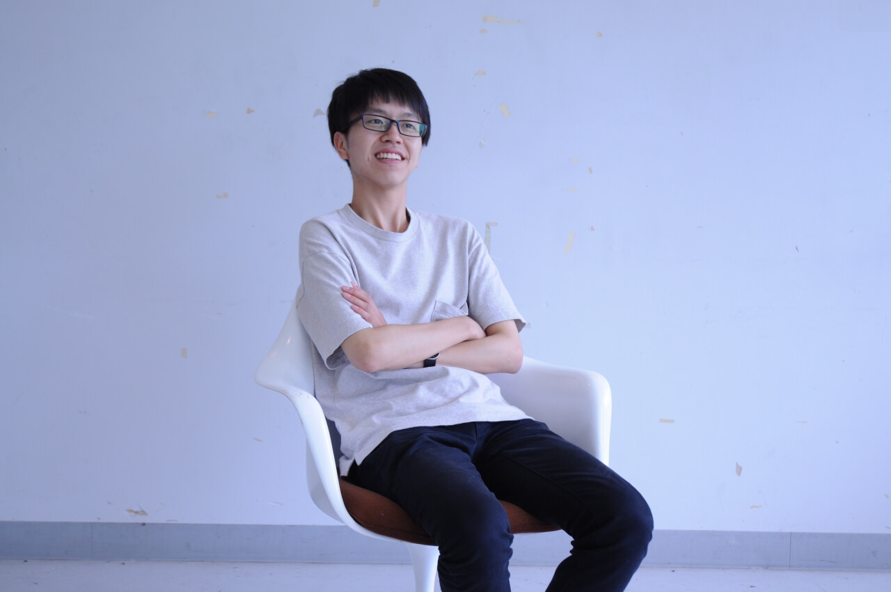
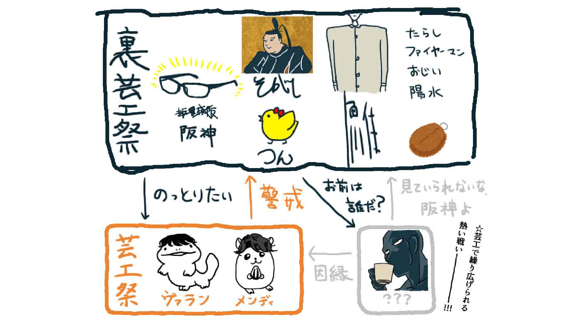
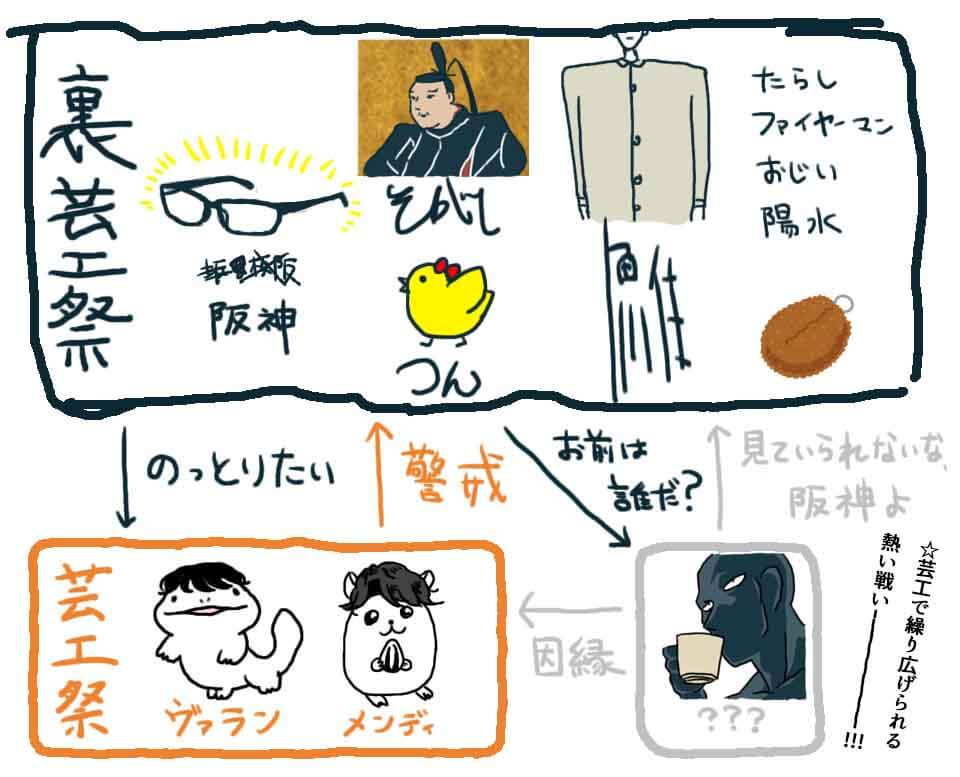

さぁ君も俺達と裏側へ行こう
裏芸工祭とは？

数年前に発足した裏の組織で、現在の裏芸工祭長・阪神は3代目にあたる。
当初の目的は「上手いこと目立ちたい者達が目立つための組織」であったがいつの間にやら芸工祭の乗っ取りがメインの目的となりつつある。
興味が湧いたそこのあなた！裏芸工祭はいつでも新メンバーを歓迎する。
是非、我々と、裏側へ行こう！
ただし来年も存在するのは定かではない。
登場人物


活動
- 第一話
- 第二話 <<<<<<< HEAD
- 第三話 =======
- comming soon... >>>>>>> origin/master